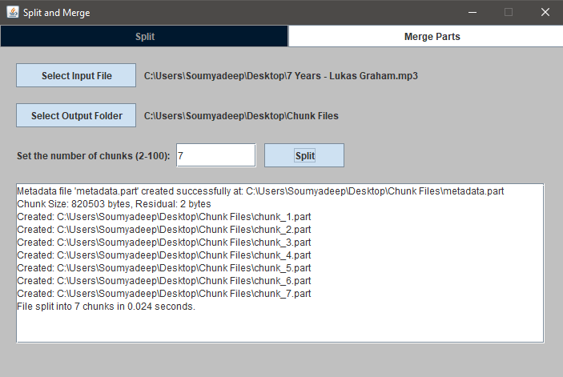
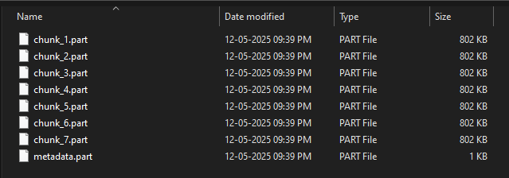
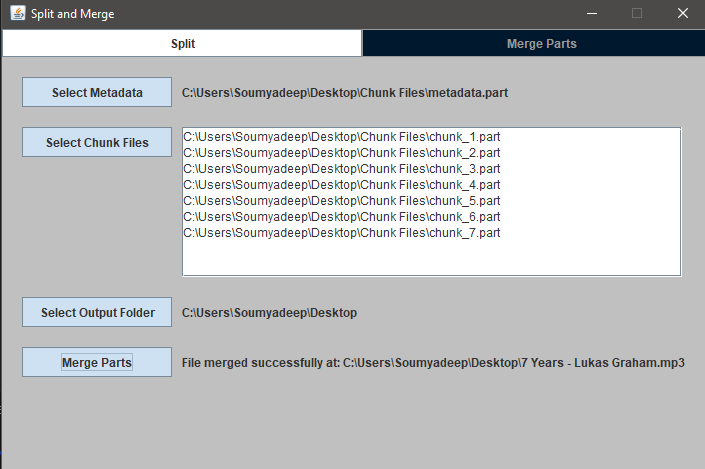

1. Introduction
This Java application allows users to split large files into smaller parts and reconstruct
them later.
It features optional metadata generation for reliable merging, even if filenames are tampered.
2. Splitting Process
When a file is split using the SplitFile class:
- The user selects a file, an output directory, and number of chunks (2–100).
- A metadata file named
metadata.part is generated by MetadataGenerator.
- Each chunk contains a 7-byte header:
- 1 byte: Chunk index
- 2 bytes: Magic number (short) — same across all parts
- 4 bytes: Size of the chunk’s actual data
- The remaining bytes are raw file data.
3. Metadata File Structure
The metadata.part file is 271 bytes long, containing:
- 1 byte: Index = 0 (reserved to mark metadata file)
- 2 bytes: Magic number
- 256 bytes: Original filename (UTF-8, padded)
- 8 bytes: Original file size (long)
- 4 bytes: Number of chunks (int)
This structure ensures validation and assists reassembly.
4. Merging Process
During merging via MergeFiles:
- If metadata is present:
- Magic number and chunk count are read from metadata.
- Each chunk’s index and magic number is verified against metadata.
- All chunks (1 to N) are expected to be present.
- If metadata is absent:
- The application infers the order from chunk headers alone.
- All chunks must have a consistent magic number.
- It validates that there are no missing or duplicate indices.
5. Tamper-Proof Mapping Using Headers
Each chunk includes a header containing its index and magic number. Even if a file is
renamed, the index can be read via:
RandomAccessFile.readUnsignedByte(); // index
RandomAccessFile.readShort(); // magic number
A HashMap<Integer, File> maps index to chunk file, so the actual filename doesn't matter. This
helps reconstruct the file in correct order.
6. Error Handling and Validation
- Duplicate indices or mismatched magic numbers will abort the merge.
- Missing chunks (based on metadata or index gaps) are detected.
- If the metadata is corrupt, the user can proceed using chunk headers alone.
7. Screenshots

Split Panel

Chunk files and metadata file after splitting

Merge Panel